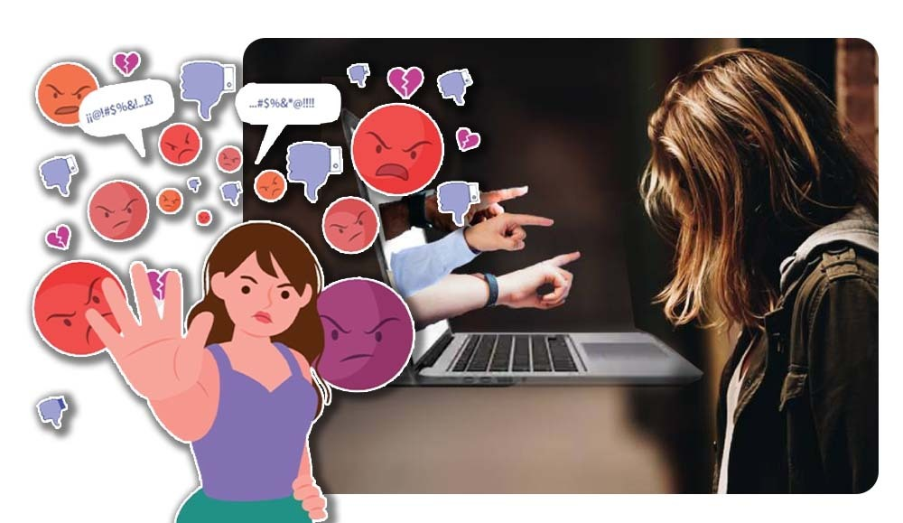
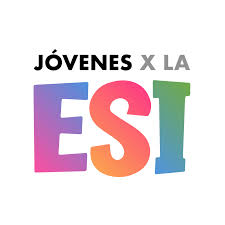

Diseñando campañas de concientizacion para redes sociales
En argentina, la educacion sexual integral (ESI) se abroda en redes sociales a traves de diversas iniciativas que buscan promover la reflexion critica sobre el uso de plataformas digitales y prevencion de riesgos en linea. estas iniciativas se enfocan en temas como el cuidado del cuerpo, las relaciones interpersonales, la diversidad sexual, la prevencion de violencias y ejerciocio responsable de la sexualidad en el entorno digital.

formacipon viurtual para jovenes
Los "jovenes por la ESI" es una campaña que se realiza a traves de diversas instancias y estrategias dentro del ambito educativo, con el objetivo de promover la educacion sexual integral (ESI) entre pares y en la comunidad. estas acciones pueden incluir talleres, charlas, actividades artisticas y interveciones en el espacio publico , siempre con un emfoque de derechos, genero y diversidad en los espacios donde los jovenes pueden expresar sus dudas, preocupaciones y experiencias sobre la sexualidad, fomentando el dialogo abierto y respetuosos.
"jovenes por la esi" se refiere a jovenes que estan involucrados en la promocion y defensa de la educacion sexual de la (ESI) en argentina. la ESI es un enfoque educativo que buscqa brindar a los jovenes infomacion precisa y adecuada sobre la sexualidad, la salud sexual reproductiva, y las relaciones interpersonales, con un enfoque de genero y derechos humanos. ¿que es lo qiue implica? "jovenes por la ESI" el activimos y la participacion. los jovenes por la ESI participan en iniciativas, campañas y proyectos que buscan garantizar en acceso a la educacion sexual integral para todos los estudiantes.
"joenes por la ESI" particioan en creacion de materiales educativos, como videos y plataformas de digitales, para difundir informacion sobre la ESI y promover el debate alos jovenes. esta campaña se dedica mucho por las redes sociales para promocionar herramientas y la toma de decisiones informadas sobre la sexualidad, la salud reproductiva y las relaciones interpersonales, lo que contribuye ala prevencion de prolemas de salud y a la promocion de relaciones saludables.
En las redes sociales, la violencia digital se manifiesta de diversas formas, incluyendo, el acoso, la difamacion, la divulgacion no consentida de imagenes intimas, el doxing y el groomung. estas acciones pueden causar daño psicologico, emocional y en la reputacio de las victimas